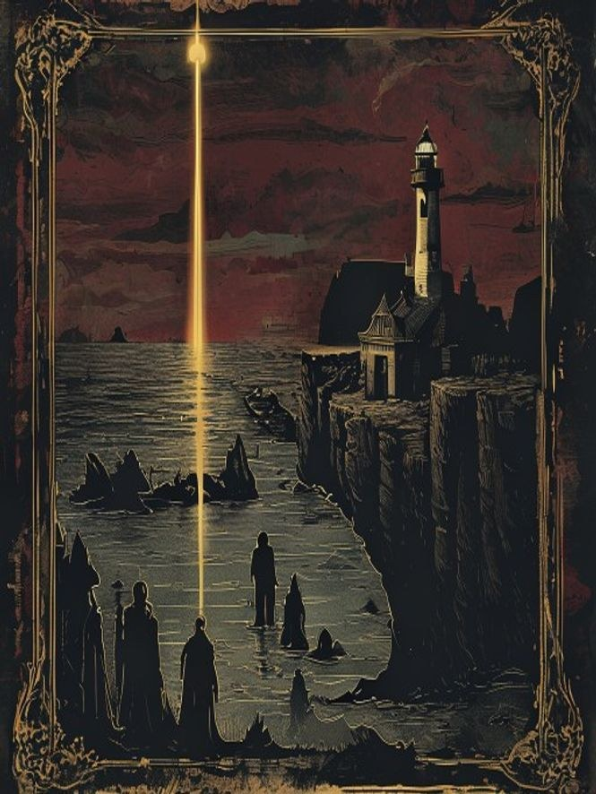

Run from your browser
Click scene to scene through a live, interactive deck — no flipping, no losing your place.
A New Kind of Adventure
One file. A whole night of play. A Dungeon Keeper is a complete adventure sealed into a single document — the art, the words you read aloud, the maps, the monsters, the secrets — ready to open in any browser and run at the table tonight.
Most one-shots hand you twenty pages and wish you luck. A Dungeon Keeper does the prep with you. Every scene is laid out the way you'll actually play it: the read-aloud box ready to speak, the original art already on the screen, the villain's true motive a click away, the battle map built right in, and the whole thing tuned to scale from a first-level party to a tenth.
It's self-contained — one file, no account, no app, no internet once it's saved. Open it on a laptop at the table or print the included PDF and run it from paper. It's yours to keep, forever. Thirty years behind the screen, poured into a document built to make your next session the one they remember.
Click scene to scene through a live, interactive deck — no flipping, no losing your place.
Every scene carries its own commissioned-style illustration. Set the mood without a word.
The boxed text is written to be spoken. Open the scene, read it, watch the table lean in.
The map you need is already in the file — no hunting, no extra downloads.
Every key figure comes with a want, a wound, and the line they will and won't cross.
Tuned for levels 1–10 and parties of 3–6. Pick your row and run it tonight.
Prefer paper? A clean, laid-out PDF ships alongside every interactive Keeper.
Save it once and own it. No subscription to read what you already have.
◆ The First Dungeon Keeper ◆

Grounded sea-horror · a one-shot
A lighthouse keeper has tended the same lamp for sixty-three years — and not aged a day. Beneath his rock sleep ninety drowned souls, and the light that keeps them dreaming is the same light that lures fresh ships onto the stones. He has run the arithmetic for a lifetime, and he is tired. When your party rows out, the horror isn't the thing under the water. It's the choice he hands you — the one with no clean answer. The win here is a decision, not a kill.
One file. Everything inside. Yours to keep — SRD 5.1 compatible, 100% original content.◆ From the Founder's Vault ◆

Quiet, then wrong · a one-shot
Seven old wards under a ruined keep have kept a grieving man's dead family asleep for forty years. One ward just broke — and he is so tired. What starts as a rescue turns into a confession, and the deeper the party digs, the clearer it gets: you can't out-fight the Sealer. You can only give him permission to stop. The win here is mercy, not a kill.
One file. Everything inside. Yours to keep — SRD 5.1 compatible, 100% original content.Every new Dungeon Keeper lands in The Weekly One-Shot before it lands anywhere else — and the free DM's Field Kit hits your inbox the moment you join. No spam, no lock-in. Just the next adventure, first.
More Keepers are on the forge — a new self-contained adventure on the way. Want to know the moment the next one drops? Join The Weekly One-Shot, or grab free tools from The Hoard.